Para que serve
A Programação de Solicitação de Análise é o calendário do monitoramento de água e de ambiente. O CQ escolhe o tipo de item (água potável, purificada, para injetáveis ou ambiente) e o tipo de análise (físico-química ou microbiológica); o sistema mostra os pontos de água ou as salas cadastrados no Principal; o usuário arrasta um ponto ou sala para um dia, informa o horário e confirma. Cada marcação vira uma solicitação de análise em "Coleta pendente de programação". Também se muda o dia de uma coleta (arrastando) e se exclui uma coleta (X vermelho ao lado do evento). Quem usa é o CQ (leitura da área). Pela norma, é a única tela do CQ que representa o programa de monitoramento de água e ambiente (RDC 658/2022, art. 14, I; art. 148, VI; art. 243, VI), mas sem frequência: cada coleta é marcada à mão (RN-CQ-106; DV-CQ-023).
Quem usa e em que etapa do processo
Quem usa
- O Controle da Qualidade, quem programa o monitoramento da água e do ambiente (leitura da área; o sistema não diz o dono da tela).
- O Principal fornece os pontos de água e as salas; a Produção tem telas próprias para o mesmo assunto, em controle paralelo (RN-CQ-119).
- Quem pode abrir, incluir, alterar, excluir, imprimir e ver o histórico está em "Quem pode usar (permissões)", mais abaixo.
Em que etapa do processo entra (tela 3 do menu Solicitação de Análise, módulo Controle da Qualidade)
- Pelo menu. A tela abre só com os dois filtros e o botão Carregar; o calendário e os itens aparecem depois.
- Os pontos de água e as salas precisam estar cadastrados e ativos no Principal, com tag. Os pontos de água do tipo escolhido e todos os ambientes são oferecidos.
- Para ambiente, o sistema não traz a classe nem o grau de limpeza da sala, só nome, descrição e tag (RN-CQ-105).
O que acontece depois (para onde o trabalho segue)
- Marcar uma coleta (arrastar, horário, OK): cria a solicitação em "Coleta pendente de programação", com a data e o horário, a tag do ponto ou da sala, a fase de coleta e o usuário que marcou; cria o item de análise no CQ se ainda não existir. Não grava histórico. O próximo passo é a Programação de Amostragem (tela 04), onde a coleta aparece em "ÁGUA / AMBIENTE".
- Mudar o dia (arrastar o evento): troca a data e recalcula o horário (último do dia + 30 minutos, a partir das 8h, até as 18h). Sem histórico.
- Excluir (lixeira): manda a solicitação para a lixeira, sem justificativa e sem histórico.
Fonte: Resumo da tela e fluxo da tela (leitura do código e dos testes). O que for leitura da área precisa ser validado com a área.
Antes de começar (o que precisa existir)
| Precisa existir | Para quê | Onde se cadastra |
|---|---|---|
| Pontos de água ativos e com tag | Aparecem nas caixas ao carregar água | Principal |
| Salas ativas e com tag (ambiente) | Aparecem nas caixas ao carregar ambiente | Principal |
| Saber o tipo de análise | Para ambiente, o certo pela norma é só microbiológico, mas a tela aceita físico-química (DV-CQ-020) | — |
Ponto sem tag recebe "Tag não informada.". A água carrega no ambiente desde 03/11/2026, depois do ajuste do DBA (reteste CT-CQ-S03-01); o agendamento da água por arrasto ainda não foi testado.
Passo a passo
Marcar uma coleta
- Abra Programação de Solicitação de Análise. Em Tipo Item Análise, escolha ÁGUA POTÁVEL, PURIFICADA, PARA INJETÁVEIS ou AMBIENTE. Em Tipo Análise, marque Físico-Químico ou Microbiológico. Clique em Carregar.
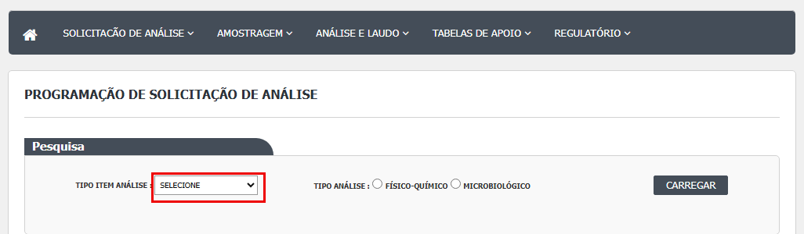
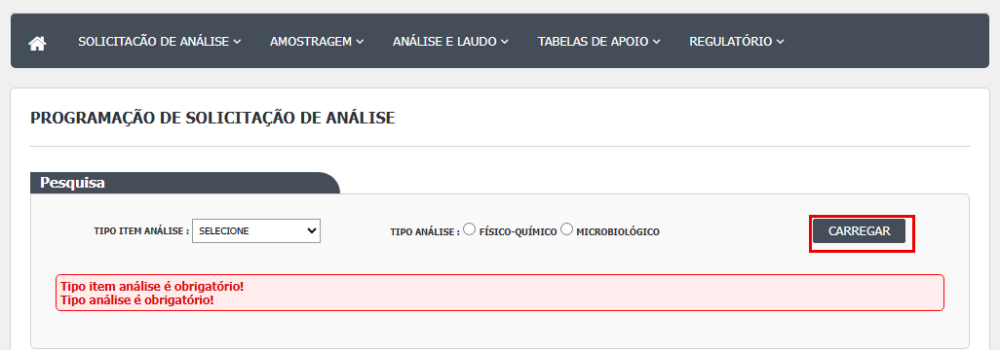
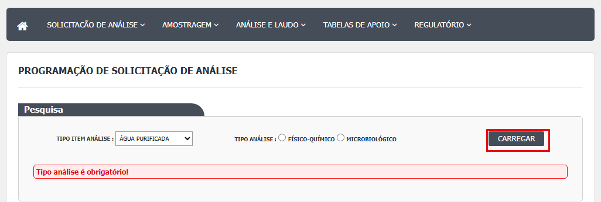
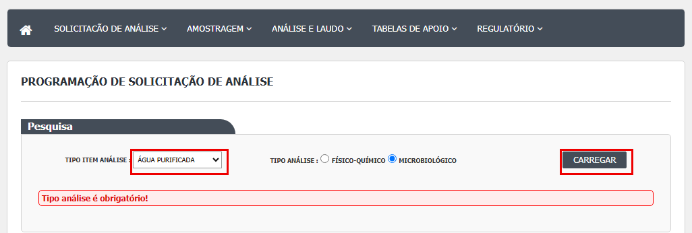

- O calendário do mês aparece, com as coletas já marcadas daquele tipo (e do mês anterior e do seguinte) e, acima dele, as caixas dos pontos ou salas (12 por página, com setas para trocar de página). O nome na caixa é cortado em 15 caracteres.

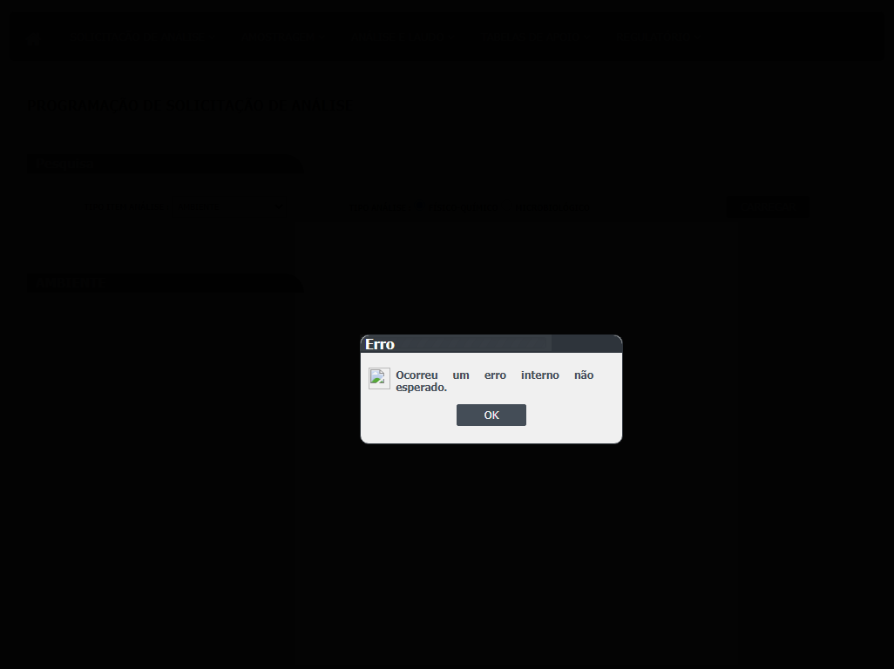
- Arraste a caixa do ponto ou da sala até o dia desejado. Abre a janela "Agendamento dia" com TAG e DESCRIÇÃO.

- Digite o horário (hh:mm) e clique em OK. Se der erro, a mensagem aparece dentro da janela; se der certo, o evento aparece no calendário. Cancelar fecha a janela.
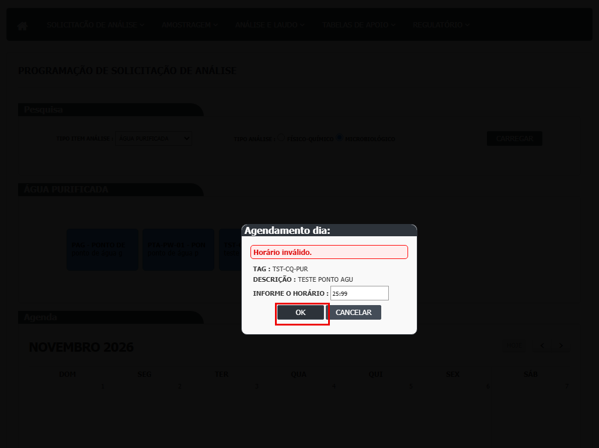
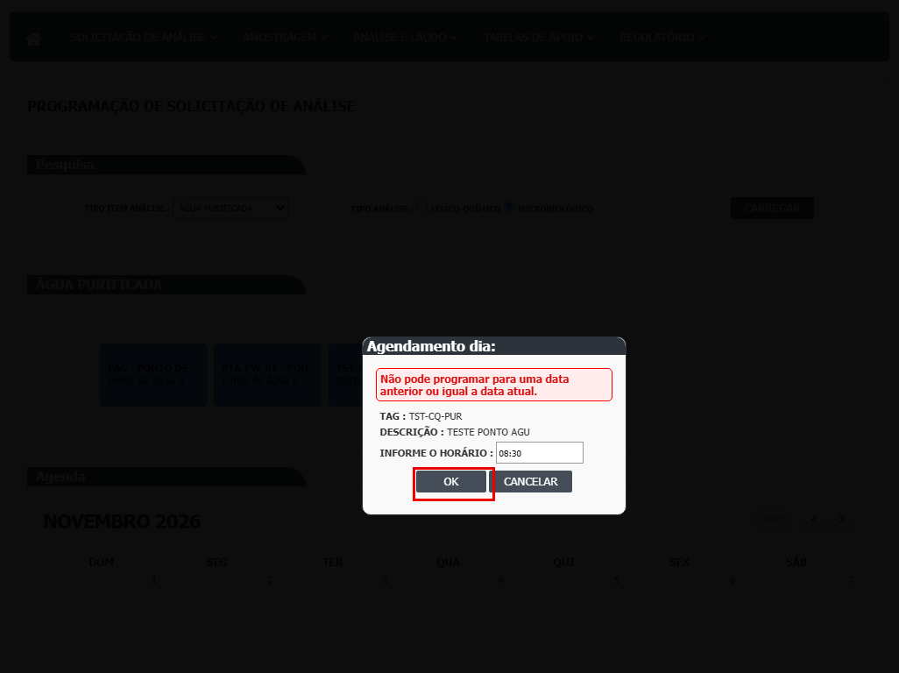
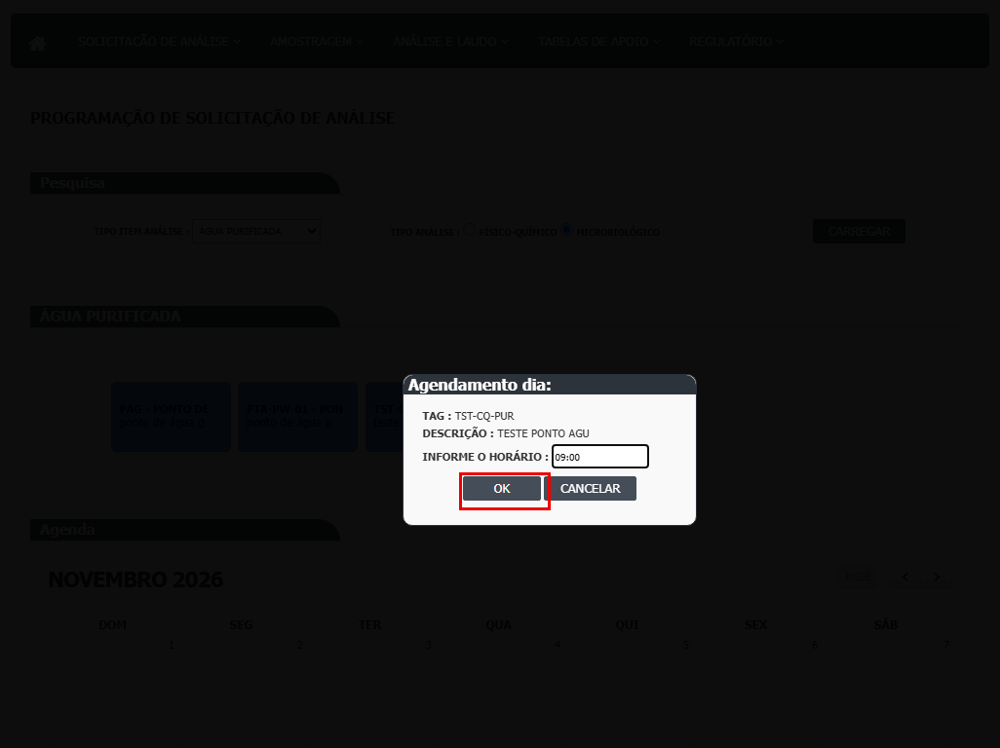
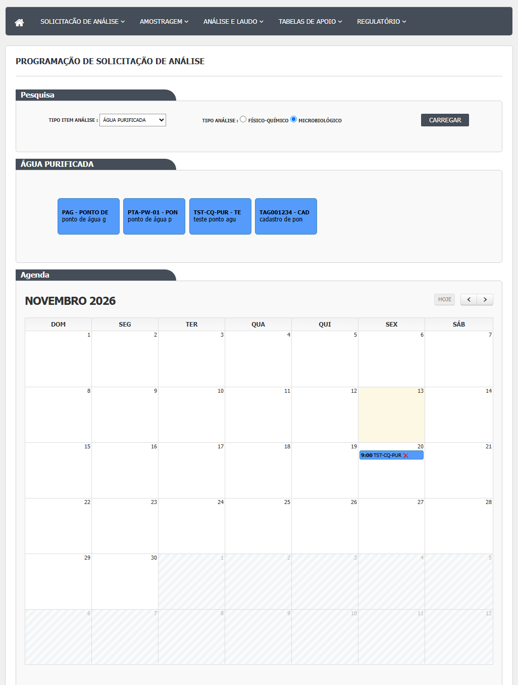

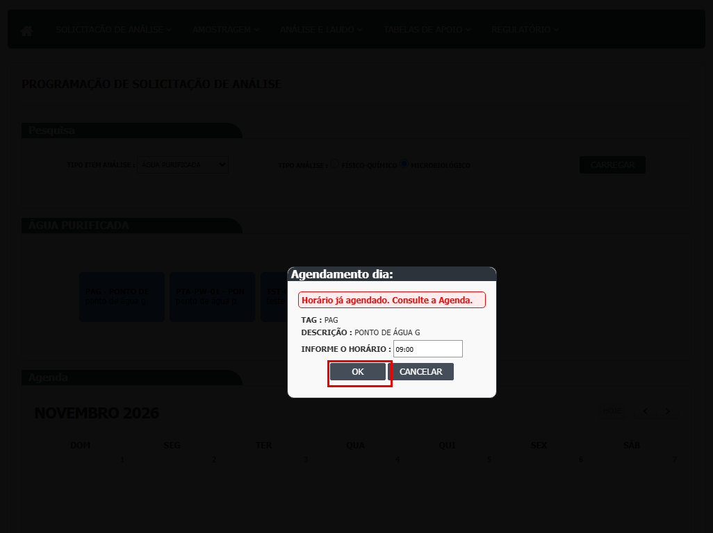
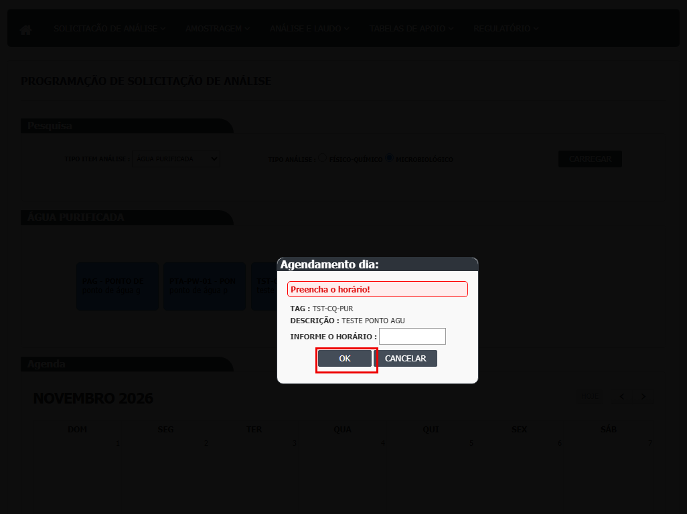
- A coleta segue para a Programação de Amostragem, onde o responsável e a data de início serão definidos.
Mudar o dia ou excluir
- Para mudar o dia, arraste o evento para outro dia e confirme "Deseja alterar a data da Solicitação?". O horário original não é mantido: o sistema escolhe o primeiro horário livre do dia, de meia em meia hora a partir das 8h.
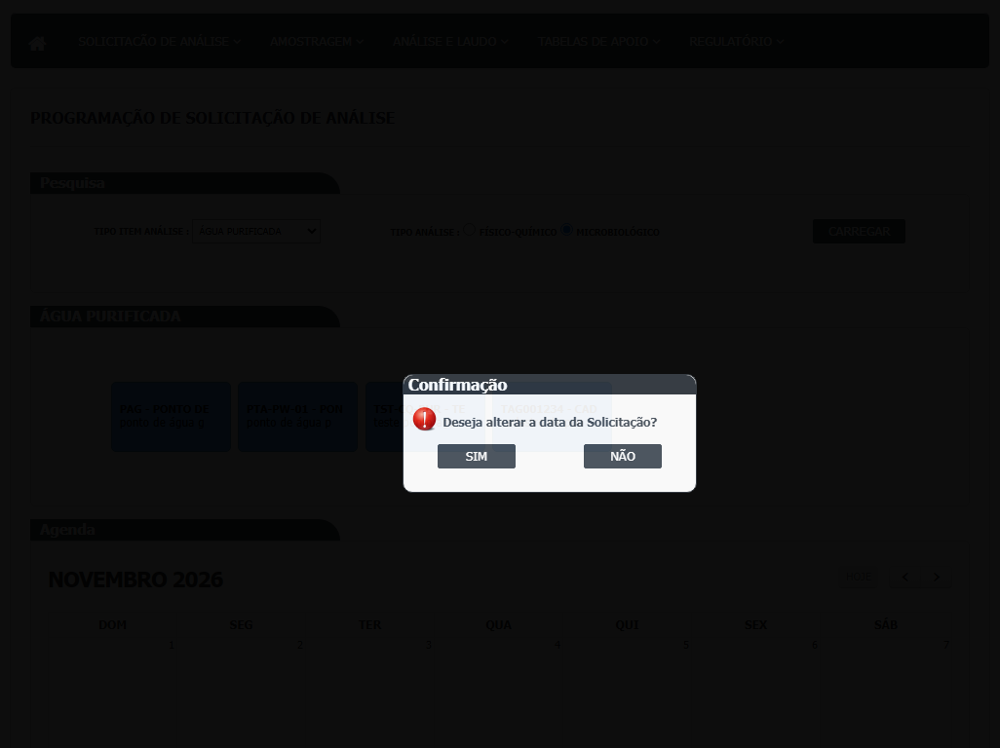
- Para excluir, clique no X vermelho ao lado do nome do evento (não há ícone de lixeira) e confirme "Deseja excluir a Solicitação?". Não há justificativa.
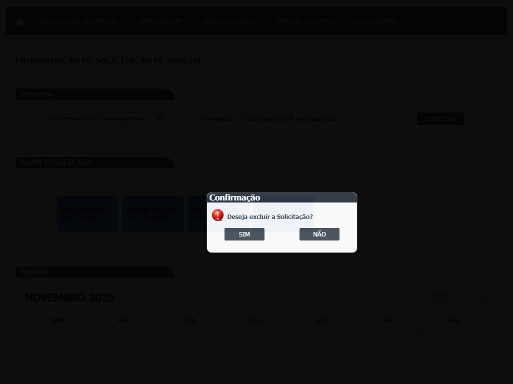
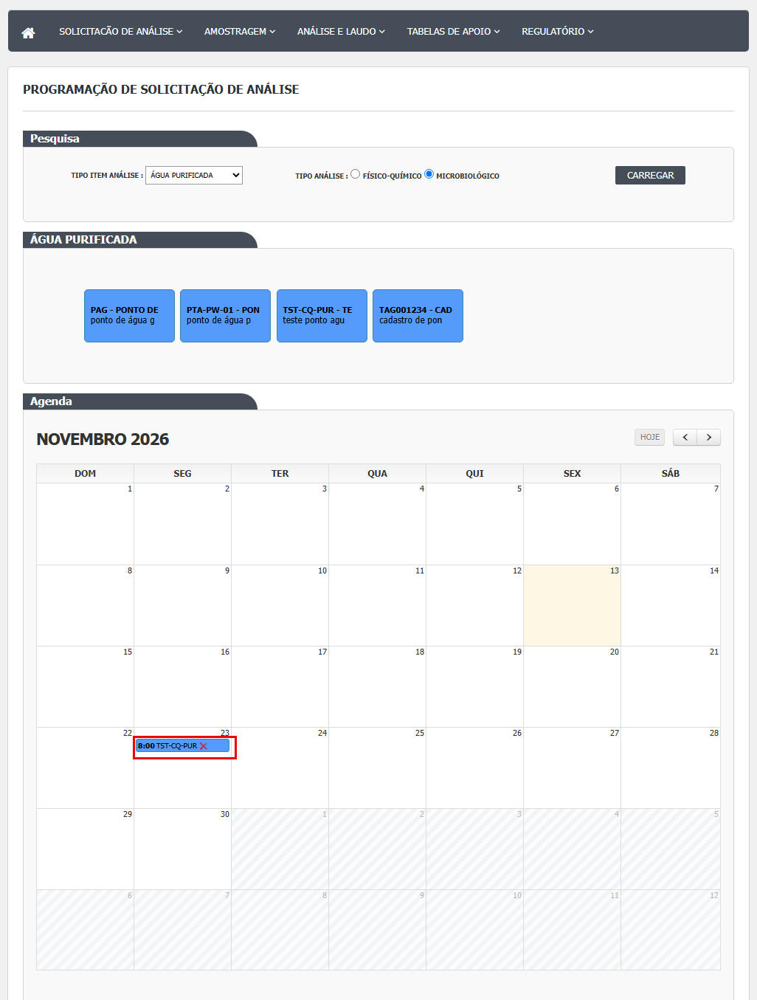
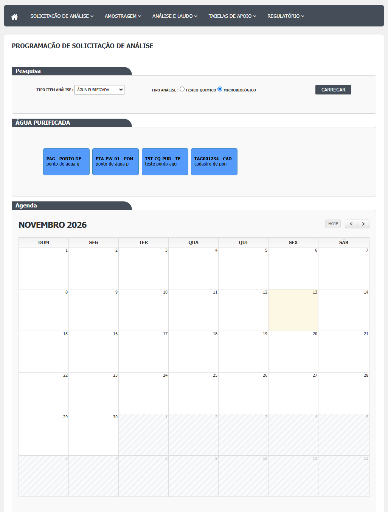
O que acontece ao confirmar ou salvar
- OK na janela de horário: cria uma solicitação em "Coleta pendente de programação", com o número interno ("1024/26") (ProgramacaoSolicitacaoController.cs:101-144).
- Mudar o dia: mantém a situação, troca o dia e escolhe novo horário.
- Excluir: manda a solicitação para a lixeira, sem justificativa e sem histórico: o log depois diz "NÃO EXISTE LOG DE ALTERAÇÃO PARA ESTE REGISTRO." (DV-CQ-018).
- A solicitação segue para a Programação de Amostragem. A tela lê do Principal os pontos e as salas; não grava em outros módulos.
O que o sistema recusa
- "Tipo item análise é obrigatório!" e "Tipo análise é obrigatório!" (Carregar sem escolher).
- "Preencha o horário!" (OK sem horário) e "Horário inválido." (por exemplo 25:99).
- "Não pode programar para uma data anterior ou igual a data atual." (hoje ou passado).
- "Horário já agendado. Consulte a Agenda." (mesmo tipo de item, mesmo dia e horário).
- "Tag não informada." (ponto ou sala sem tag).
- Ao mudar o dia: "Já existe programação até horário limite na data. Consulte a programação completa na agenda." (não visto: CT-CQ-068 bloqueado).
- Falhas: "Ocorreu um erro inesperado." (gravação, exclusão ou mudança de dia) e "Ocorreu um erro interno não esperado." (lista de pontos).
Quem pode usar (permissões)
- A tela é a função
solicitacaoanalise/programacaosolicitacao(DB/dml.sql:167). Para abrir, o perfil precisa da permissão de consultar. - Só a abertura da tela tem conferência de permissão, e ela confere só "consultar". Listar itens, Incluir, Excluir e Alterar o dia não conferem permissão (SEG-CQ-01); o calendário e a lixeira aparecem para quem abre a tela, sem conferir incluir, alterar ou excluir.
- No teste, o perfil só de consulta abriu a agenda pelo endereço e viu a janela "Agendamento dia", mas a gravação não foi concluída (o arrasto automático não preencheu a data, nem para o administrador). Não há defeito de acesso registrado, nem prova de que a tela recuse (CT-CQ-R2-AC-03; caso CT-CQ-S03-13 pendente).
- O servidor não confere a função de quem marca ou exclui. Chefe de subdivisão: o código não exige.
Cuidados e falhas conhecidas
- Não há frequência: se a sala deve ser monitorada toda semana, cada semana é marcada à mão (DV-CQ-023, Média).
- Ambiente com físico-químico e horário livre: a tela aceitou físico-químico para ambiente e horários como 23:30 e 00:01 (DV-CQ-020, Média).
- Exclusão sem rastro: sem justificativa nem histórico (DV-CQ-018, Média).
- Água: a lista de pontos não carregava e dava "Ocorreu um erro interno não esperado." (DV-CQ-001, Média; DV-CQ-008, Alta). Resolvido no ambiente em 03/11/2026 pelo DBA; segue aberto no projeto de banco.
- Ambiente com físico-químico: em 13/11/2026, Carregar com Ambiente e Físico-Químico deu "Ocorreu um erro interno não esperado." e não trouxe salas nem calendário (DV-CQ-060, Média).
- Data da janela: a janela "Agendamento dia" abre sem mostrar a data escolhida (DV-CQ-061, Baixa).
- Sem teste por falha do ambiente: Ambiente microbiológico e as outras águas, paginação das caixas, botões Mês anterior, Próximo e Hoje, horários 23:30 e 00:01 e "Tag não informada" ficaram sem print porque o servidor de teste saiu do ar (HTTP 503) em 13/11/2026, por uma queda externa de serviço (não é defeito do sistema); serão feitos quando o ambiente voltar. Ponto para validar com a área: a tela não tem lápis nem Ver log; confirmar se isso é o desenho esperado.
- Numeração: o número da solicitação vem do código interno e a primeira de material seguinte sai fora da sequência (DV-CQ-024, Baixa).
- Não aceita hoje nem datas passadas; não mostra a classe de limpeza da sala, não registra resultado e não guarda quem excluiu.
Ícones e botões da lista
Esta tela é um calendário, não uma lista com ícones de linha; o que há de ícone e botão:
| Ícone ou botão | O que faz | Em que situação aparece |
|---|---|---|
| Carregar | Desenha o calendário e os itens | Sempre |
| Setas de página dos itens (anterior e próximo) | Trocam a página das caixas de pontos ou salas | Anterior só se a página é maior que 1; próximo só se é menor que o total (_ItensProgramaveis.cshtml:14 e 35) |
| Lixeira no evento | Exclui a coleta | Em cada evento, sem condição de situação |
| Mês anterior, próximo, hoje | Troca o mês | No calendário |
| Lápis, lupa, LOG | — | Não existem nesta tela |
Campos da tela
Fontes: Area/Views/ProgramacaoSolicitacao/.cshtml e Area/Script/.js.
| Campo na tela | Tipo | Obrigatório | Regra, limite ou valores possíveis | Fonte |
|---|---|---|---|---|
| Tipo Item Análise | Lista | Sim | ÁGUA POTÁVEL, PURIFICADA, PARA INJETÁVEIS e AMBIENTE; "Tipo item análise é obrigatório!" | Agenda.cshtml:52; ProgramacaoSolicitacaoController.cs:66-67; ProgramacaoSolicitacaoAgenda.js:85-87 |
| Tipo Análise | Botão de opção | Sim | Físico-Químico ou Microbiológico, sem nenhum marcado de início; "Tipo análise é obrigatório!" | Agenda.cshtml:56-60; ProgramacaoSolicitacaoAgenda.js:89-91 |
| Carregar | Botão | — | Desenha o calendário, carrega as coletas já marcadas e a lista de pontos ou salas | Agenda.cshtml:64; ProgramacaoSolicitacaoAgenda.js:44-66 |
| Caixas dos pontos ou salas | Itens arrastáveis | — | 12 por página; nome cortado em 15 caracteres; cada caixa leva o código externo, a descrição (também em 15 caracteres) e a tag | _ItensProgramaveis.cshtml:20-27; ItemProgramavel.cs:39-48; ProgramacaoSolicitacaoController.cs:79 |
| Calendário | FullCalendar, mês | — | Mostra as coletas em "Coleta pendente de programação" do tipo de item e de análise escolhidos, no mês e nos vizinhos; título do evento = tag (e descrição da sala) | Agenda.cshtml:102; ItemProgramado.cs:19-38; SolicitacaoAnaliseRepository.cs:393-412 |
| TAG, DESCRIÇÃO (janela de horário) | Texto informativo | — | Vêm da caixa arrastada | _ModalHorario.cshtml:55-63; Agenda.js:152-156 |
| INFORME O HORÁRIO | Texto com máscara 99:99 | Sim | "Preencha o horário!" se vazio; "Horário inválido." se não for hora | _ModalHorario.cshtml:68; ProgramacaoSolicitacaoAgenda.js:2-3; Agenda.js:165-168; ProgramacaoSolicitacaoController.cs:278 |
Botões e ações
Quais botões cada pessoa vê depende das regras de acesso, que estão na seção de segurança.
| Botão ou ação | Quando aparece | O que faz | Para onde leva a solicitação | Fonte |
|---|---|---|---|---|
| Carregar | Sempre | Confere os dois filtros e desenha o calendário e os itens | Não muda | Agenda.cshtml:64; ProgramacaoSolicitacaoAgenda.js:44-66 |
| Setas dos itens | Quando há mais de 12 itens | Troca a página da lista de pontos ou salas | Não muda | _ItensProgramaveis.cshtml:11-16 e 32-37 |
| Arrastar caixa até o dia | Depois de Carregar | Abre a janela "Agendamento dia" | Não muda até o OK | Agenda.js:85-93 |
| OK (janela de horário) | Na janela | Confere data e horário e cria a solicitação | Coleta pendente de programação | Agenda.js:161-174; ProgramacaoSolicitacaoController.cs:101-144 |
| Cancelar (janela de horário) | Na janela | Fecha a janela | Não muda | Agenda.js:176-179 |
| Arrastar o evento para outro dia | Em cada evento | Pergunta "Deseja alterar a data da Solicitação?" e troca o dia | Mesma situação, outro dia e horário | Agenda.js:74-83; ProgramacaoSolicitacaoController.cs:170-193 |
| Lixeira (no evento) | Em cada evento | Pergunta "Deseja excluir a Solicitação?" e exclui | Lixeira | Agenda.js:108; ProgramacaoSolicitacaoAgenda.js:233-248 e 301-305 |
| Mês anterior, próximo, hoje | No calendário | Troca o mês (o mês fica guardado na sessão) | Não muda | ProgramacaoSolicitacaoAgenda.js:118-145; ProgramacaoSolicitacaoController.cs:221-241 |
Mensagens do sistema
As marcadas "vista em teste" aparecem no resultado das rodadas.
| Mensagem (texto do código) | Quando aparece | Fonte |
|---|---|---|
| Tipo item análise é obrigatório!; Tipo análise é obrigatório! | Carregar sem escolher (não vistas em teste) | ProgramacaoSolicitacaoAgenda.js:86 e 90 |
| Preencha o horário! | OK sem horário (não vista em teste) | Agenda.js:166 |
| Não pode programar para uma data anterior ou igual a data atual. | Arrastar para hoje ou para o passado (vista em teste, CT-CQ-060, 23/10/2026) | ProgramacaoSolicitacaoController.cs:275 |
| Horário inválido. | Horário que não é hora, como 25:99 (vista em teste, CT-CQ-N-24, 23/10/2026) | ProgramacaoSolicitacaoController.cs:278 |
| Horário já agendado. Consulte a Agenda. | Outro agendamento do mesmo tipo de item no mesmo dia e horário (vista em teste, CT-CQ-061, 23/10/2026) | ProgramacaoSolicitacaoController.cs:284 |
| Tag não informada. | Ponto ou sala sem tag (não vista em teste) | SolicitacaoAnaliseService.cs:40 |
| Já existe programação até horário limite na data. Consulte a programação completa na agenda. | Mudar o dia para uma data cheia até as 18h (não vista: CT-CQ-068 bloqueado) | SolicitacaoAnaliseService.cs:155-156 |
| Deseja alterar a data da Solicitação?; Deseja excluir a Solicitação? | Confirmações (a segunda vista em teste, CT-CQ-067) | Agenda.js:79; ProgramacaoSolicitacaoAgenda.js:304 |
| Ocorreu um erro inesperado. | Falha na gravação, na exclusão ou na mudança de dia (não vista em teste) | CQControllerBase.cs:303; ProgramacaoSolicitacaoController.cs:140, 164 e 189 |
| Ocorreu um erro interno não esperado. | Falha da chamada que lista os pontos (vista em teste com água potável e água purificada, 09/10 e 23/10/2026) | CQApi.js:20-22 |
Quem pode fazer o quê
Ainda não levantado para esta tela
O quadro "Quem pode fazer o quê" é preenchido a partir de testes de tela por perfil (nível, área e etapa do registro), nunca por suposição. Esta tela ainda não passou por esse levantamento.